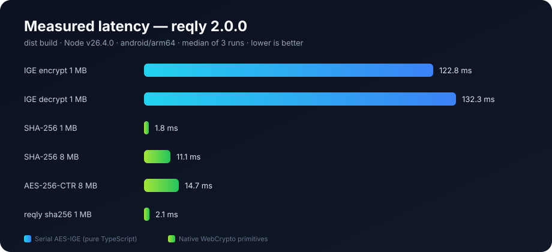
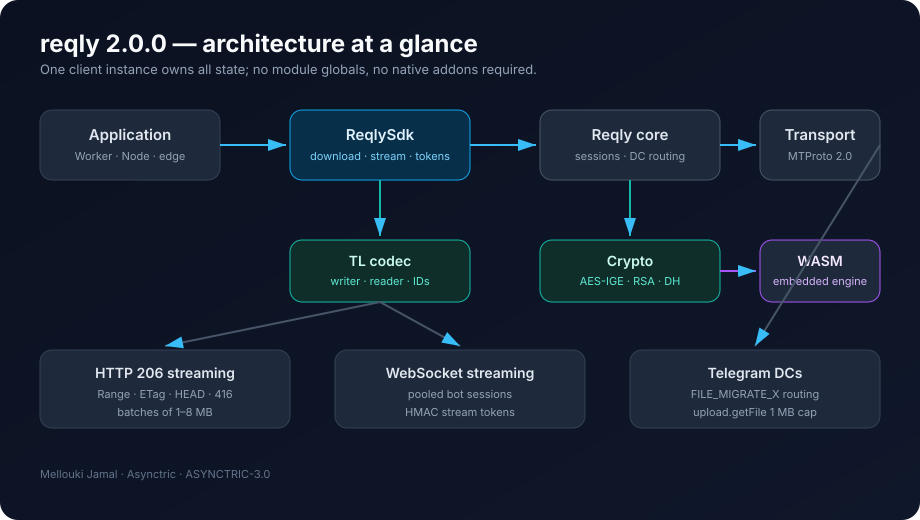

reqly is a lightweight MTProto 2.0 request/reply client for Cloudflare Workers and edge runtimes. Version 2.0 adds a high-level SDK, embedded WASM crypto, HTTP range streaming, WebSocket streaming, HMAC tokens, cross-DC routing and measured benchmarks.
This page is a static, offline-safe demo. All bytes shown are synthetic; no Telegram request is made and no credential is used.
Every capability below ships inside reqlyproto — no second package, no native install step.
206 responses with Content-Range, ETag, HEAD and 416. Scroll to seek, batched 1–8 MB per response.
Full in-house RSA + DH handshake. FILE_MIGRATE_X retries on the correct data center automatically.
Short-lived HMAC-SHA256 tokens authorize Worker-to-Worker streams without exposing a session.
AES-256-IGE compiled into dist, loaded automatically; a custom provider can replace it at startup.
Per-instance msg_id counters and connections. Concurrent Workers cannot collide.
scripts/bench.mjs writes real measurements to JSON. No credentials, no network, fully reproducible.
Drag the slider or scroll the viewport to seek. Each visible block is a simulated 1 MB upload.getFile request answered as HTTP 206.
Live request log
Median of 3 runs on Node v26.4.0 (android/arm64) against the shipped build. IGE is serial by design; native WebCrypto primitives are ~70× faster.

Native WebCrypto. The streaming path deliberately avoids hashing inside a Worker request.
Parallelizable CDN path. The only route to native-speed large ranges.
Serial TypeScript backend. Embedded WASM reduces this; the protocol itself cannot be parallelized.
The static SVG works everywhere. Where Mermaid is available, the same flow is rendered live below it.

Download, stream and verify — the raw client remains one property away.
// npm install reqlyproto import { createReqlySdk, ReqlySdk } from "reqlyproto" const sdk = await createReqlySdk({ session: MT_SESSION, // Worker secret dcSessions: DC_SESSIONS, tokenSecret: STREAM_SECRET, }) const bytes = await sdk.download(document) const stream = sdk.stream(document, { chunkSize: 512 * 1024 }) const hashes = await sdk.hashes(document) const key = ReqlySdk.cacheKey(document, 0, bytes.length) // raw TL access is still available await sdk.client.invoke(methodBytes) sdk.close()